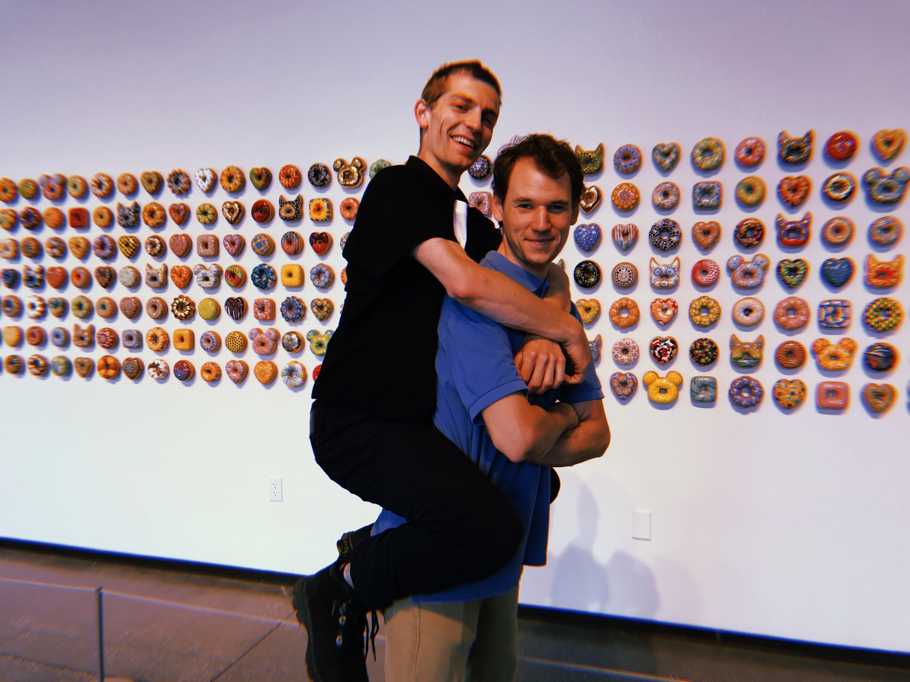

Dropping out of Grad School
- date: 2020-06-20
- status: emotional
Summary
After 1.5 years in CU Boulder’s math PhD program, I had “too many fish to fry” (a conflagration of conflicting commitments!), and signed papers to take an indefinite leave of absence.
I’m glad to have now discerned that, after all, I won’t go back to the math department (as much as I would love to enroll in classes) on a teaching assistantship, because would rather “work to be a winner, baby” by breaking into the world as a “tech professional”.
The following folks were instrumental in helping me realize that I could (and in fact should) pivot in my career trajectory: Agnès, Richard, Peter, Divya, Sam, JQ, Yu.
I don’t really owe anyone an explanation, but since I might later be curious why I’m pivoting, I’ve compiled the following reverse chronological entries from a “working journal” I started in the style of Philip Guo, Issa Rice, and Nadia Egbhal between 0.5 and 2 years’ time in grad school.
2020-05-28
Have a phone interview today with Jelli.
Following the advice of https://candor.co/interview-prep/how-to-not-suck-at-behavioral-interviews, I’m preparing answers to the following ten “very basic interview questions that come up all the time”, relative to my application for an entry-level software engineering position at Jelli.
2020-04-20
I moved to Boise, Idaho, my hometown, after getting the bad idea to leave Olympia and try to live in Tacoma.
2020-03-31
Found out yesterday I didn’t get the NSF GRF for 2020 (application documents).
Reflecting on this news (rather early in the morning):
-
I think have been avoiding certain life tasks for want of superficial reward.
-
Had I gotten the GRF, I would’ve leveraged this funding to exacerbate power struggles in my “vertical” relationships (namely avoiding TA duties), rather than building horizontal relationships (what Alder describes as ‘community feeling’).
-
Now, since I am no longer tied to Boulder, I have freedom to choose where I want to live: and I want to live in Houston, TX.
Here’re sections of texts I read to mull over my (vocational) tasks as distinct from the tasks of others.
Tao Te Ching, lyric 9, translated by Aleister Crowley
(Originally quoted to me by Dave Spring 2014 after poorly passing Differential Equations.)
Fill not a vessel, lest it spill in carrying. Meddle not with a sharpened point by feeling it constantly, or it will soon become blunted.
Gold and jade endanger the house of their possessor. Wealth and honors lead to arrogance and envy, and bring ruin. Is they way famous and thy name becoming distinguished? Withdraw, thy work once done, into obscurity; this is the way of Heaven.
Bhagavad Gita, verses 3.27–3.35, paraphrased from Edgarton Franklin
Material nature’s Strands perform all actions. And one whose soul is deluded by ego imagines: ‘I am the agent behind these actions.’
Yet one who knows the truth, O mighty Arjuna, — ‘The Strands act upon the Strands’ — is not attached to actions.
Bewildered by material nature’s Strands, many attach their Self to these Strands’ actions. But those of complete knowledge cannot disturb these dull folks of incomplete knowledge.
So Arjuna, surrendering all your activities unto Me, fixing your mind on your highest self, being free from longing and selfishness, cast lethargy aside and fight!
Those who follow this doctrine of Mine, full of faith and not murmuring, are released from their karma bondage.
But those who — murmuring against it — do not follow my doctrine, are deluded in all their knowledge; know that these fools are lost.
One acts according to their own material nature — even the wise — as all beings follow their nature; what can repression accomplish?
Of every sense, upon the objects of that sense, longing and loathing are fixed. But one should not fall under their power, as both are foes.
Better one’s own duty, (tho) imperfect, than another’s duty well performed. Better death while performing one’s own duty — another’s duty brings danger.
The Courage to Be Disliked, page 186, Ichiro Kishimi and Fumitame Koga
(Recommended to me by Scott this last Winter.)
Youth: But! When one is praised by another person, one becomes truly aware of one’s ability and regains one’s courage. Please do not be stubborn about this point — just acknowledge the necessity of giving praise.
Philosopher: No, I will not acknowledge that.
Youth: Why not?
Philosopher: The reason is clear. Being praised is what leads people to form the belief that they have no ability.
Youth: What did you say?
Philosopher: Shall I repeat myself? The more one is praised by another, the more one forms the belief that one has no ability. Please do your best to remember this.
Youth: Do such foolish people even exist? It’s got to be the other way around! It is as a result of being praised that one becomes truly aware of one’s ability: isn’t that obvious?
Philosopher: You are wrong. Even if you do derive joy from being praised, it is the same as being dependent on relationships to your perceived superiors, and implicitly conceding that you have no ability. Because giving praise is a judgement that is passed by a person of ability onto a person without.
Youth: I just cannot agree with that.
Philosopher: When receiving praise becomes one’s goal, one is choosing a way of living that is in line with another person’s system of values. Looking at your life until now, aren’t you tired of trying to live up to your superior’s expectations?
Youth: Um, well, I guess so.
Philosopher: First, do the separation of tasks. Then, while accepting each other’s difference, build equal horizontal relationships. Encouragement is the approach that comes next.
Youth: So, concretely speaking, how does one go about this? One cannot praise, and one cannot rebuke. What other words and choices are there?
2020-03-17
Happy belated Pi Day! I have spent the last month or so learning how to “write idiomatic python programs” by studying notes from Jake Vanderplas [@Van16], Wes McKinney [@McK17], Michael Eichberg [@Eic18], John Guttag [@Gut16], and others [@Sha17]. Here’s a bibliography.
Project Development
A summary of [@Eic18].
The goal [of these notes] is to enable you to systematically carry out small(er) commercial or open-source software projects.
Basic knowledge of object-oriented programming concepts is necessary.
A summary of [@Sha17].
Just write down what you think your process is and what problems you seem to have. At this stage you might have no idea how you work because you aren’t very experienced. To help you I’ve compiled a list of questions:
- Do you tend to make defective code with no idea why?
- Do you keep piling code on top of code until there’s just a huge mess?
- Do you get past the first implementation of your project and have no idea how to take it further?
- Do you feel inferior or like a fraud who will get caught?
“Idiomatic” Python
A summary of [@Gut16].
When you have finished this book you should have […] learned a systematic approach to organizing, writing, and debugging medium-sized programs.
A summary of [@Van16].
A Whirlwind Tour of Python is a fast-paced introduction to essential features [e.g., errors and exceptions, modules and packages] of the Python language, aimed at researchers and developers who are already familiar with programming in another language.
A summary of [@McK17].
This book is concerned with the nuts and bolts of manipulating, processing, cleaning, and crunching data in Python. My goal is to offer a guide to the parts of the Python programming language and its data-oriented library ecosystem and tools that will equip you to become an effective data analyst.
“Pythonic” SQL
From the introduction to [@Cop15].
SQL is a powerful language for querying and manipulating data in a database, but sometimes it’s tough to integrate it with the rest of your application. You may have used string manipulation to generate queries to run over an ODBC interface, or used a DB API as a Python programmer. While those can be effective ways to handle data, they can make security and database changes very difficult.
This book is about a very powerful and flexible Python library named SQLAlchemy that bridges the gap between relational databases and traditional programming. While SQLAlchemy allows you to “drop down” into raw SQL to execute your queries, it encourages higher-level thinking through a more “Pythonic” and friendly approach to database queries and updates. It supplies the tools that let you map your application’s classes and objects to database tables once and then to “forget about it,” or to return to your model again and again to fine-tune performance.
SQLAlchemy is powerful and flexible, but it can also be a little daunting. SQLAlchemy tutorials expose only a fraction of what’s available in this excellent library, and though the online documentation is extensive, it is often better as a reference than as a way to learn the library initially. This book is meant as a learning tool and a handy reference for when you’re in “implementation mode” and need an answer fast.
This book is intended for those who want to learn more about how to use relational databases in their Python programs, or have heard about SQLAlchemy and want more information on it. To get the most out of this book, the reader should have intermediate Python skills and at least moderate exposure to SQL databases. […] If you are new to SQL and databases, check out Learning SQL by Alan Beaulieu [@Bea20]. These will fill in any missing gaps as you work through this book.
2020-02-05
MWE for the image archive. https://blog.coltongrainger.com/attached/2020-02-05-mwe.tar.gz
2020-01-21
In ncar_pylib, there’s no module MySQLdb nor module pymysql. But SQLAlchemy can still connect via the connection string (c.f. https://docs.sqlalchemy.org/en/13/dialects/mysql.html#module-sqlalchemy.dialects.mysql.mysqlconnector)
mysql+mysqlconnector://<user>:<password>@<host>[:<port>]/<dbname>
through mysql-connector, which is available.
2020-01-20
At least in B-tree indexes and in group theory, a “transversal” refers to a unique set of “class” representatives.
[ad. L. transvers-us turned or directed across, pa. pple. of transvertĕre: see
transvert. Cf. F. transverse (16th c.).]
2020-01-18
I found Philip’s sample images on the SIParCS google drive and feel like a straight fool for not knowing they were there. I now have 7.4 GB of raw images to use as a test image database.
Moreover, I should also include the logbooks of the USS Jeanette.
- https://research.archives.gov/id/6919191
- https://research.archives.gov/id/6919192
- https://research.archives.gov/id/6919193
- https://research.archives.gov/id/6919194
Well, I’d at least better be able to connect to
rda-db.ucar.edu
but I can’t even seem to do this with
globalprotect connect --portal gp.ucar.edu
Erg! But there’s hope, if I shell into Casper first (or maybe just use my work laptop) then I can access
mysql -h rda-db.ucar.edu -u <user> -p<password> images
with no problem. Moreover
MySQL [images]> show grants for dssdb@localhost;
GRANT ALL PRIVILEGES ON `images`.* TO 'dssdb'@'localhost'
so that if I create the user dssdb on my local mysql server, and am able to inject metadata there, porting over to Casper shouldn’t be too difficult.
I have through MLK day to do it. Yikes!
-bash-4.2$ mysql -h rda-db.ucar.edu -u dssdb -p -V
mysql Ver 15.1 Distrib 5.5.56-MariaDB, for Linux (x86_64) using readline 5.1
2020-01-17
What do I need for yoga during the next couple of months? Christina lists:
- An open mind and a commitment to learning.
- A journal.
- A notebook and pen.
- A good mat, a mat towel.
- Layers and clean clothing.
- Eating utensils, snacks, packed lunches.
- Consider dropping or reducing caffeine, sugar, smoking, social media, etc.
- Extra support. We encourage other modalities (i.e. therapy, acupuncture, massage, etc.) to complement yoga.
- A light heart.
2020-01-13
Bibliography
Here’s a bibliography for some “gymnastics” that I’m getting into.
{kind=link}
1966-iyengar-light-on-yoga
2014-hansen-netters-anatomy-coloring-book
1997-ellis-clinical-anatomy
2002-iyengar-light-on-the-yoga-sutras-of-patanjali
2010-freeman-the-mirror-of-yoga
2009-adele-the-yamas-and-niyamas-exploring-yoga-as-ethical-practice
2000-rothschild-the-body-remembers
2004-naparstek-invisible-heroes
2004-vanderkolk-the-body-keeps-score
2015-rose-untangled
2017-sherman-alexie-you-dont-have-to-say-you-love-me
2006-tharp-the-creative-habit
2012-cope-the-great-work-of-your-life
2000-rothschild-the-body-remembers-casebook
2004-alter-yoga-in-modern-india
2005-de-michelis-elizabeth-history-of-modern-yoga
2010-singleton-yoga-body-the-origins-of-modern-posture-practice
2017-mallinson-singleton-the-roots-of-modern-yoga
2018-cohen-the-upanishads-routeledge
2016-ithamar-exploring-the-bhagavad-gita
2000-snyder-reader-prose-poetry-and-translations
2010-snyder-the-practice-of-the-wild
2000-desalvo-writing-as-a-way-of-healing
2014-snyder-martin-nobody-home-writing-buddhism-and-living-in-places
2020-01-10

From Inés Estrada, March 2019.
2020-01-04
I might be motivated to work for a particular person rather than on a specific project.
This style of motivation is appropriate because I’ve given up on logging time for myself.
From my experience with kan-ban and without a cell phone over the last 3 months (since failing two prelims this Fall), I recognize I just shouldn’t actively track myself when I’m “working on myself”. (I have some passive trackers, e.g., time series data for my heartrate, my sleep, and my approximate location. But I don’t have to remember do anything to collect this data, and I get to analyze it post hoc.)
At the same time, I would like to actively track myself, so I’m trying to be attentive (when I’m working) to whom I feel I am working for, rather than fretting to much about what I am doing.
- chores for myself
- rdai docs for Matt
- rdai database for Tom
- topology notes for Agnès
- algebra notes for Peter
- analysis notes for Sergei
2020-01-01

From this summer with Sam.
2019-11-28
Visited my folks in Idaho. Stopped going to classes once I got back to Boulder.
2019-11-07
I am working as a student visitor for DECS at NCAR.
2019-10-28
I present on the Research Data Archive’s image repository for the CU STEMinar.
2019-09-24
I present on Lazard’s theorem for the CU topology seminar.
2020-09-01
Pretty sure I failed some prelims. Opps. Quit vaping.
2019-08-25
I am teaching Math 2510-001 Introduction to Statistics this fall.
2019-07-31
I present Towards Categorical Metadata for SIParCS at NCAR.
2019-07-04
Fourth of July BBQ with Janet and the SIParCS cohort. Janet and Ian left town to visit their folks, leaving me alone at 858 9th St for about a month.
2019-06-04
Since I’m liable to forget, I’ll describe my current “PIM schema” by cataloging
- my
$HOMEdirectory, - what I have on paper, and
- software I subscribe to for managing projects.
$HOME
I have a Lenovo T420, whose name is lobster. My home directory looks something like
colton@lobster:~$ tree -L 1
.
├── art
├── blog
├── coltongrainger.bib
├── cv
├── Dropbox
├── fy
├── journal
├── lec
├── lit
├── mus
├── pho
├── raw
├── README.md
├── rec
├── rote
└── wiki
During “fiscal year 2019” (i.e., Jun 2018 to May 2019), I commonly worked commonly in
fy(projects for the “fiscal year”)wiki(materials for https://quamash.net)raw(scanned handwritten notes, henceraw) androte(tab separated files for mnemosyne).
The previous two years (modulo a few details) look like
colton@lobster:~$ tree -L 1 fy/18
fy/18
├── 2017-09-job-apps
├── 2018-04-16-offer-letter-cu-boulder.pdf
├── 2018-04-27-picklebric-application.txt
├── 2018-06-18-tutoring
├── bulma-0.7.1
├── coding-with-kids
├── cogr-webpage
├── coq
├── data-management-plan
├── diagnostic
├── dishwashing
├── eo
├── fscss-interviews
├── fscss-private
├── fscss-wiki
├── fscss-work
├── grad-apps
├── grad-funding
├── grap-apps.bak
├── hakyll
├── leading-lesson
├── logos
├── mentoring
├── mnep-script
├── notedown
├── num
├── odes
├── PreTeXt-mathbook
├── prob
├── py
├── PythonDataScienceHandbook
├── rcf
├── spoken-word
└── tex-templates
and
colton@lobster:~$ tree -L 1 fy/19
fy/19
├── 2018-06-alg1-top1-ana1.pdf
├── 2018-06-until-2019-02.pdf
├── 2019-03-topology-seminars.pdf
├── 2019-05-11-top2-omnibus.pdf
├── alg1
├── alg2
├── clothing
├── cu3d
├── diffgeo1
├── dircolors-solarized
├── examples
├── internships
├── mitschriebwiki
├── napkin-outline
├── neural-network
├── orientation
├── prelims
├── prob1
├── project-ideas
├── records-and-old-todo
├── ripser
├── RISE
├── safe
├── slow-pitch
├── soml
├── stylefiles
├── summer-review
├── ta
├── TDAstats
├── top1
├── top2
├── tripos-course-guides
├── unicode.sh
├── vim-tex-fold
└── yst
About 75% of repositories I have on github (for lack of a better name) are prefixed with, e.g., fy00, to indicate that they are locally saved under, e.g., $HOME/fy/00/.
I only have digital directories under fy back to (about) 2009–2010, when I was spending quite a bit of time after school with “kdawg wangalicous” and the policy debate topic was
Resolved: The United States federal government should substantially increase social services for persons living in poverty in the United States.
colton@lobster:~/fy/10$ tree
.
├── 2009-apology-to-davidson.txt
├── 2009-GDI-Nietzsche-K.pdf
├── 2009-GDI-Objectivism.pdf
├── 2009-UTNIF-Carceral-Archipelago-K.pdf
├── 2009-UTNIF-Marxism-K.pdf
├── 2009-UTNIF-Standpoint-Epistemology-Critique.pdf
├── 2010-ecopanda-behemoth.pptx
├── 2010-ganatos-nary-slender-script.txt
└── 2010-mein-lieblingsplatz.txt
This coming year looks like
colton@lobster:~$ tree -L 1 fy/20
fy/20
├── aiwatch
├── analysis
├── applied-analysis
├── nsf-grf
├── pandas
├── rda-image-archive
├── siparcs
└── topology-prelim
Last year, I used my dropbox to sync notes (written in Notability on my tablet) and pdfs.
colton@lobster:~$ tree -L 1 Dropbox/
Dropbox/
├── Crypted
├── Downloads
├── export
├── import
└── todo.txt
This year, I plan to keep pdfs in google drive and designate dropbox as my download folder. (I have an SD card for torrent files >2GB.)
Paper
I am abandoning taking notes on my tablet, because the generated pdfs were large (~100MB) and I realized that Notability was just another (however sleek) WYSIWYG editor in which I wasted my time and was often frustrated with formatting. The alternatives look like
- notes in
latexormarkdownon my laptop - notes in a (chronological) series of 13x21 cm, un-ruled, cahier journals
- notes on paper, scanned as dated pdfs to
raw
I may scan the cahier journals pages (as done by mpacer here https://mpacer.org/qualifying-exam-materials/#/qualifying-exam-written-portion/). Primarily however, in leaving the tablet for paper, I’m following https://usesthis.com/interviews/jeremy.kun/:
… I have specificity for writing implements on par with my vim configuration. I use a very specific kind of notepad—unruled, cheap, abundant, low-weight stock—and similarly specific notebooks—small, unruled. I can never use paper or a notebook that I feel is too fancy to house my unendingly bad ideas and egregious mistakes. The only good paper is paper for which, when you throw it on the ground and grab a new sheet to start over, you don’t feel bad. Lined paper is hell. I prefer 0.9 mm lead mechanical pencils, though more often than not a 0.7 mm Bic is what I have handy.
At the same time, I will keep books and lecture notes that are polished and proofread on my tablet, to save weight and leave room in my backpack for plenty of snacks.
Software
Tersely, I subscribe to use the following software.
- trello
- for a single todo list,
- and a single reading list.
- pinboard
- zotero
- github
Each week, I put ~15 links in pinboard, ~30 cards in trello, and ~3 citations in zotero.
I abandoned emacs org-mode for my TODO list because
- I didn’t find any use for clocking my time,
- my use was too ephemeral to properly learn org-mode’s chording,
- I suffered through 2 weeks of “emacs configuration bankruptcy” in May 2018
- I couldn’t stand to edit my TODO.org file on my phone.
I listen to music off my phone (connected to a Marshall Woburn Bluetooth speaker) via
- google play music, or
- the hype machine.
2019-04-19
Here’s a viscerally boring design problem.
| lecture notes | laptop or notebook |
| reading scribbles | iPad or scratch |
| problem sets | laptop or iPad |
2019-04-08
My bibliography has gotten out of control. Leo told me to stop shopping around. But how?
Ask for advice?
2019-03-23
Took a hiatus from updates to focus on coursework.
Trivial news: I’ve transitioned my notes and reading material to Notability for the iPad. As a result, most of my workflow is once again offline.
By working from an iPad, however, I am happily meeting some immediate goals. These include:
- reading broadly for prelims,
- integrating my lecture notes with my reading notes, and
- frequently grinding through exercises.
2019-02-01
| alg2 | free modules, feedback on written work, e.g., avoid vague notation such as “Let $\phi \in \mathrm{Hom}$” [@DF04 ch. 10.3] |
| diffgeo1 | manifolds with boundary, defining smooth maps, equivalent characterizations of smoothness [@Lee03, pp. 24–35] |
| top2 | relative chain complexes, pairs of topological spaces, tensor product review, cohomology with coefficients in $G$ [@Bre03, section IV.5] |
2019-01-31
TA-ing. Not much math.
2019-01-30
| alg2 | subobjects, direct sums, freely generated modules [@DF04 ch. 10.3] |
| diffgeo1 | smooth manifold chart lemma, Grassmannians [@Lee03, pp. 21–22] |
| top2 | presentations from problem sets; handling edge cases for the first homology group |
Presentations were a bit nerve-racking when I realized that I had too heavy-handedly abelianized an infinite product. (See https://mathoverflow.net/questions/35397.) Ulrich and I found a counter example where $[\prod G_i, \prod G_i] \subsetneq \prod [G_i, G_i]$. I was then incensed to straighten out which (co)products exist in which concrete categories I’m usually working in.
2019-01-29
- Revised some module theoretic arguments for Green into two-column proofs.
- Caught up on basic (topological) properties of manifolds.
- Prepared for presentations in top2.
I was glad to attend the organizational meeting for the topology seminar. From Beaudry’s introduction:
This semester, we will cover some of the topics in homotopy theory that make an appearance in the work of Freed–Hopkins–Teleman on topological phases of matter. This seminar will be parallel to the Mathematical Physics seminar (Wednesdays from 3-4 pm in MATH 350) but will be for the most part independent. This seminar will be about topology: To understand the connections to physics, you’ll have to read on your own or go the other seminar. We have an ambitious schedule (see plan). It’s not a bad idea to read up a bit on the topics before the talks since we’ll be covering material fast.
The math-physics seminar is co-organized with Prof Hermele, whose research is in theoretical condensed matter physics.
2019-01-28
| alg2 | finitely generated modules [@DF04, ch. 10.3] |
| diffgeo1 | smooth structures, transition maps [@Lee03, pp. 10–16]; spheres, level sets [@Lee03, pp. 17–23] |
| top2 | exact sequences of chain complexes, the Bockstein homomorphism |
2019-01-27
Notes from Clelland. Basic examples of smooth manifolds. Finished modules problem set from [@DF04, ch. 10.2].
2019-01-26
Notes from Green on modules.
2019-01-25
Lectures. In top2, Beaudry mentioned that “if we didn’t like that game” [forcing maps defined out of the cycle group $Z_1(X)$ to descend to the quotient $H_1(X)$] “then we would like it soon because we were about to play it hard.” Lol.
In the afternoon, I set up definitions for functor categories and generally the category of quivers (directed graphs).
Talked a bit with Ulrich about duality and Gelfand–Naimark, which motivated me to try and rope the content in alg2 and diffgeo1 closer together. (Ulrich also suggested that I push to do homological algebra sooner than later.)
2019-01-24
In prob1, we defined random variables and set up results to guarantee the existence of a random variable that’s equal in distribution to whatever probability measure we have chosen. Also defined cdfs, pdfs, and pmfs, with reference to the Lebesgue decomposition theorem.
I spent the rest of the day TA-ing. I decided to abandon prooflogger since only a third of the sections had anything to do with it. I was brought to my senses by Ulrich, after he mentioned that he only attended recitations in Trondheim to drop off homework.
2019-01-23
Lectures.
- In top2, we set out to prove Hurewicz’s theorem.
- In alg2, we defined module homomorphisms and started to construct some sort of chain of $F[x]$-modules.
- In diffgeo1, we stated topological properties of manifolds [@Lee03, pages 5–9] and exhibited spheres, products, and projective spaces as manifolds with charts.
2019-01-22
I spent the day solidifying my argument for the smooth chain rule in Banach spaces. Also finished [@DF04, section 10.1].
2019-01-21
Went through Lang’s introduction [@Lan99, ch. 1] to topological vector spaces.
2019-01-20
I translated Folland’s “first look” at functional relations into intuition for the dimension and symmetric properties of repeated Fréchet derivatives.
I surveyed proofs for inverse function theorems and implicit function theorems [@Fol02, ch. 3.1], [@HH15, ch. 2.10], [@Lee03, no. C.34].
2019-01-19
Worked through the motivating historical calculus in Massey’s Singular Homology Theory [@Mas80, chapter 1]. (Massey develops homology theory with $n$-cubes rather than simplices—why? To have oriented $n$-cubes available as integrands? Does some argument/limiting process fail when working with an infinitesmally thickening mesh of simplices?)
I struggled with notation for repeated applications of the Fréchet derivative. Got distracted in considering repeated linear transformations as vectors spaces themselves in the category of topological vector spaces. Skimmed related results in I.3 of Lang’s Fundamentals of Differential Geometry [@Lan99, chapter 1].
In Folland, I gladly found two problems that matched gaps in my knowledge: one to do with Lagrange multipliers and the spectral theorem, the other to do with setting up a meaningful definition of higher Fréchet derivatives.
Let $A$ be a symmetric $n \times n$ matrix, and let $f(\vec{x}) = (A \vec x) \cdot \vec x$ for $\vec x \in \mathbf{R}^n$. Show that the maximum and minimum of $f$ on the unit sphere ${ \vec x : \lvert\vec x\rvert = 1}$ are the largest and smallest eigenvalues of $A$. [@Fol02, number 2.9.19]
Suppose $f \colon \mathbf{R}^n \to \mathbf{R}$ is of class $C^2$; then $\nabla f$ is a $C^1$ mapping from $\mathbf{R}^n$ to itself. Show that $D(\nabla f)$ is the Hessian matrix of $f$. [@Fol02, number 2.10.6]
2019-01-18
Lectures.
- Alg2: In the category of modules, we defined homomorphisms, kernels, quotients, and began to state a series of familiar isomorphism theorems [@DF04, chapter 10.2].
- Diffgeo1: Stated the implicit function theorem [@Lee03, chapter C], and defined a topological manifold [@Lee03, chapter 1].
- Top2: Reasoned about long exact/non-exact sequences of abelian groups.
I found out that I conditionally passed the algebra prelim, and so, made a haphazard sketch of work to do.
| term | workload |
|---|---|
| He18 | Algebra 1, Topology 1, StatOptML (algebra prelim) |
| Fr19 | Algebra 2, Topology 2, DiffGeo1 (topology prelim) |
| So19 | SIParCS, CU MRE, NSF apps |
| He19 | Algebra (Green, Wise, Casalaina-Martin), Analysis 1, Numerics (Bradley, Meiss, Becker, Raf) |
| Fr20 | Analysis 2, Complex Analysis, Algebraic Topology (Pflaum, Beaudry) |
| So20 | Talbot, more NSF apps, teaching |
| He20 | topic proposal, advisors in MATH/APPM/CS |
(I have 90% confidence that I will stave off probability until next year.)
(Update: Maybe quantum physics with Hermele next year?)
2019-01-17
Mostly teaching, then munging surveys I had put out to the calculus sections. I went to the first meeting for a reading course in probability/measure theory. (I then had about 0.3 confidence I would drop.)
I reviewed the chain rule in Folland’s Advanced Calculus [@Fol99, chapter 2.3], and derivatives in several variables as linear transformations in Hubbard’s A Unified Approach [@HH15, chapter 1.7–1.9].
2019-01-16
Lectures again, worked to flesh out definitions for modules and simplices. Made progress in defining two functors:
- $\Delta ( - )\colon \mathsf{Top} \to \mathsf{Ch}$ (by moving from graded abelian groups to chain complexes), and
- the correspondence ‘tween $F[x]$-modules and $F$-vector spaces $V$ with a chosen endomorphism $V \to V$.
2019-01-15
Attended offices hours for top2. Asked how to distinguish the monodromy action from action of the group of deck transformations. Got permission to stop reviewing top1 (woot!) and pass onto homology.
Thought about morphisms of vector spaces from a categorical perspective. Skimmed Breezer’s FCLA (elementary matrices as transformations, 4 subspaces, similar and diagonal matrices). Worked through examples (especially notation) in PCM I.3.4. Slowly began to understand why one would want eigenvector bases to study subspaces “stable” under linear transformation.
Also spent an upsetting amount of time configuring pandoc on my laptop and server. Gross. I don’t even see how the software is held together. Way beyond me.
2019-01-14
Started lecture notes for Topology 2 (top2), Differential Geometry 1 (diffgeo1), and Algebra 2 (alg2). Linearity is 4sure the unifying theme of the week. Notably, diffgeo1 made a whirlwind tour of Appendix B in Lee’s Introduction to Smooth Manifolds.
2019-01-13
I previewed syllabi and reading for the next 2 weeks.
- Homology in Hatcher, Bredon, and May;
- Modules in Dummit & Foote;
- Linear Algebra/Calculus review in Lee.
I also setup https://cu3d.github.io, a catalog of 3D-printed models, for the MARC.
2019-01-12
Errands. Odds & ends from last semester’s todo.org. I had a lengthy, meandering conversation with two older grad students (TK & Carly) about faculty transitions at CU in the last 6 years. I realized how convenient https://aiwatch.issarice.com was for summarizing rank/career changes. Not much math.
2019-01-11
More teacher training. Finished my SIParCS application. Mnemosyne.
2019-01-10
Attended teacher training. Finished transcribing an interview with Leah Buechley. Setup duplicity with google cloud platform. Defragmented my gmail archive.
2019-01-09
Took the topology prelim. Answered 3 of 6 questions in point-set and algebraic topology.
- separation properties
- applications of Seifert van-Kampen
- homotopy groups of real projective space
Talked to TK: what to review for differential geometry?
- multilinear forms up to the definition of a tensor product
- implicit and inverse function theorems
2019-01-08
More chores, etc. I installed KeePassX.
2019-01-07
As a chore and measure of progress, I attempted the algebra prelim.
-
I struggled to understand possible group actions of $Q_8$ on ${1, \ldots, n}$. In a dilemma, I wrote out a treacherously long table of conjugacy classes for $S_n$, $n = 4, \ldots, 7$ and made a confusing argument about normal subgroups as unions of conjugacy classes.
-
Afterwards, Andre and I discovered a one-liner to show “$Q_8 \le S_n$” is absurd for these cases.
When $Q_8$ acts on $I_n$ for $n < 8$, the stabilizer of any point in $I_n$ contains $-1$, whence $-1$ is in the kernel of the action.
-
Also afterwards, when I needed to determine which primes in $\mathbf{Z}$ were also Gaussian primes, I found myself impressed with Weissstein’s MathWorld.
-
I expect the Slack channel Chris and I were using to study will soon be defunct.
-
To shift gears for topology, I passed over a survey: PCM IV.10.
2019-01-06
Chris and I ran through Micky’s group theory notes. I discovered Zassenhaus’ The Theory of Groups and skimmed through chapter IV on $p$-groups and Sylow $p$-groups.
To de-stress before the prelim, I browsed the OED for historical uses of morphism, quaternion, group, ring, field. (I found Zassenhaus under quaternions.)
2019-01-05
I continued to atomicize mnemosyne cards by expanding “naive” procedural topics from the GRE. I went through a proof of Sylow’s theorems and thought about the conjugation and left translation action of a group $G$ on its $p$-groups.
2019-01-04
Chris and I sat for a timed practice exam, adapted from Ed Dummit’s 2014 algebra summer enhancement program. I feel silly taking the exam before I know what I’m doing, but
- there’s a timeline, and
- our dept chair emphasizes “trusting oneself” to seek out “new challenges and novel contexts”.
Her accompanying advice is, of course, to “doubt oneself” and “build what you know”, which I look forward to reverting to after next week.
I compiled Micky Steinberg’s 2014 group theory notes into a light-hearted practice exam for tomorrow.
2019-01-03
Chris talked me through problems 1–3 on CU’s Jan 2008 algebra prelim, which I didn’t understand. For prob 2, we needed to make a recursive argument to find a nontrivial abelian normal subgroup of prime power order in a finite solvable group. Ian also mentioned this problem (with enthusiasm) before break, so I might revisit it.
I started reviewing from Hubbard, following the week 1 schedule for Paul Bamberg’s Math 23a. (The supplemental materials for math 23a are great, and I think I’ll exhaust most of my free time before Jan 14 going over these.)
Lastly, I went through exercises in I.1 Fields from Halmos’s Finite Dimensional Vector Spaces, which is admittedly out of date. I’m going through Halmos, however, because
- I found a hardcopy in the math dept’s reading room, and
- I was impressed when I skimmed Halmos’s and Steenrod’s 1973 How to Write Mathematics.
2019-01-02
Distracted today: I setup yst to compile yaml data into a CV, as per Dom Moritz’s https://domoritz.de/cv/. Dom’s job-hunting stress thoroughly dosed me (by proxy) with timeline stress, and, incidentally, I spent the day “signalling”.
2019-01-01
I revised cards on introductory measure theory, also group actions. I continued through a backlog of reviews I owed mnemosyne from last semester.
(Oddly as well, I flicked through photos from 2018 back to the beginning of 2016, when I was skiing a bit and preparing to graduate. From my undergraduate coursework, maybe I’m only interested to mnemo-fy notes from electricity and magnetism? from ordinary differential equations?)
2019-12-31
I spent some time convincing myself that “chunking mathematical concepts” would be more rewarding “completing prerequisites in a satisfactory order” after reading Michael Nielsen’s essay on anki. I reactivated mnemosyne cards I had made studying for the math GRE.
While revising cards I had starred for typos, I began to recognize I’d been trying to chunk concepts that were too complex for a first pass. (I found a particularly bad batch of measure theory cards—should delete these or just atomicize them?)
2018-12-30
I finished https://prooflogger.quamash.net, which I hope Lee will allow me to force some of the calculus sections to use. Here is an outline I’d give students. I aim to game students into presenting proofs to each other and providing constructive oral feedback.
2018-12-29
I thought about social support networks while travelling from Idaho back to Boulder, e.g., the cohort effect.
2018-12-27
Following https://nadiaeghbal.com/notes, https://issarice.wordpress.com/, and https://youtu.be/M2pGiBrw-Ns?t=422 I’m starting a working journal with a broad scope: early graduate school in the mathematics department at CU Boulder.
This journal supersedes my now obsolete blog.
I haven’t gotten permission to emulate any one of the above authors, so I’m sort of planning to write in a manner that oscillates between each’s style. In spite of the common medium (~daily entries) it seems each author’s motivation is tangential to the other two’s: writing for exploration, for transparency, for reflection.
I imagine I will be keeping this journal
- to narrate what I’ve been working on in a chronological fashion,
- to give myself encouragement by tracking progress through my coursework,
- to urge myself on (as in ski-racing, where we’d often yell at each other “up up up!”).
I think it would be appropriate to include characteristic quotes, which motivate this journal.
Nadia Eghbal (notes)
11/26/18
Realizing that I love to be alone, like in a physically low-stimulation environment, but I still think of myself as socially oriented even in that context. I still like texting/FaceTiming friends. And: I only want to be alone to work on ideas that I eventually take back to others. Like, if I were just writing for the sake of writing and not publishing it out, I’d probably get pretty bored and antsy
11/26/18
Amplification vs. exploration: Usually I say that I prefer writing to talks/interviews bc I can think better through writing over speaking. But I think another big reason is bc people often want you to talk about stuff you’ve already done, which is not that interesting to me. Whereas with blog posts, it’s my blog, I don’t really care if you read it or not, I’m just putting stuff out there and hopefully connecting with a few ppl who feel the same way. To me, writing is pushing to the edges, exploring the limits of my identity and what I’m comfortable sharing in public. Whereas any other form of communicating ideas feels performative: I’m rehashing things I already know, and that you know me for. Also why I had to get off Medium (bc it made blogging feel performative)
Issa Rice (a note on scope of updates)
As I stated at the beginning, this blog came about because I wanted to make available information about “what I’m up to” in cases where “what I’m up to” doesn’t naturally lead to public updates. So I think it’s not so important to record things on here when the same information can be obtained through other sources (i.e. my public activity on other websites).
However, I also want to have some kind of conceptual coherence about this blog. And since the overlap between “my activity that doesn’t naturally lead to public updates but where I would like to make public updates available” and “my AI safety learning” is nearly perfect, I think I will track the former by writing about the latter.
Philip Guo (vlog transcript, talking about his journal)
anyways so when I started my postdoc I thought of this idea I don’t know how I thought of it but I thought this idea that I would just keep a running diary of anything that I’ve encountered that to work-related that I felt like writing down. so it was very simple. I created a text file. this is my first one (reading it) this is really funny I’m just reading this. this is July 2013, my first month as a postdoc.
July 2013 I’m going to start a rough weekly work diary reflecting on my thoughts about life as a young academic. I need to focus more on how I feel rather than what I did since it’s easy to later reconstruct what I did from other artifacts but it’s hard to recreate old feelings. this diary is gonna be quite rough and I don’t want to hold myself to a strict writing schedule. let’s keep this fairly freeform and low-key.
once again in parentheses I said: focus on how I feel rather than just what I did